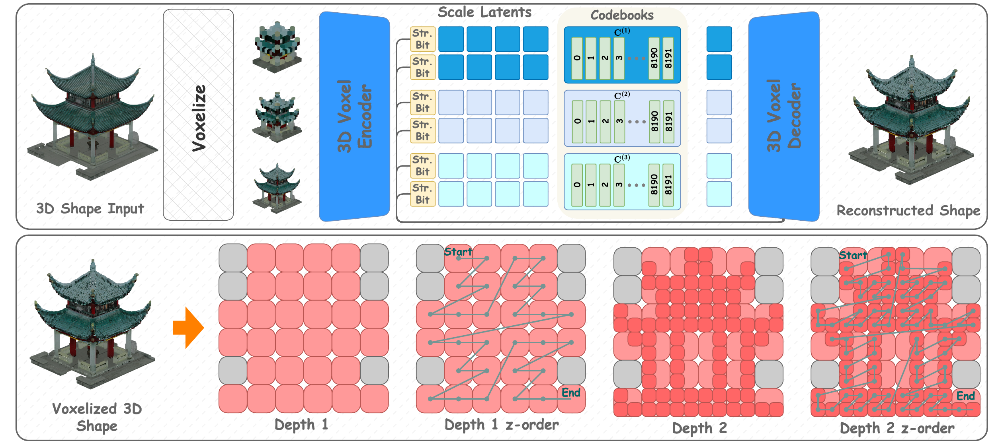

Unified 3D foundation models aspire to generate 3D assets and reason about them in language
within a single backbone, where one model can reconstruct an object from an image, generate
one from text, describe its structure, and support downstream reasoning over geometry. Yet
their text–3D interaction remains largely implicit: existing methods concatenate text
and 3D tokens into a flat sequence and rely on self-attention to discover cross-modal
correspondences, collapsing coarse structural cues and fine geometric detail into a single
undifferentiated representation. What is missing is not merely a stronger hierarchical 3D
representation, but a unified design that structures language and geometric reasoning jointly.
ELSA3D addresses this with
elastic semantic anchoring, enabling structured interaction between semantic
cues and geometric content.
Scale-aware octree tokenization
Each 3D object is represented as a multiscale octree constructed from a canonicalized
128³ voxel grid, recursively subdivided to a maximum depth. The first three octree levels
are fully populated to provide a stable global scaffold; beyond this coarse scaffold the octree
is sparse, with nodes added only where they intersect surface geometry. Each node carries a
structural bit indicating whether it is subdivided and a content token
encoding its local geometry, quantized against a scale-specific codebook so that each
vocabulary specializes in geometric primitives at its resolution. Every content token is
further augmented with a learned positional embedding and a fixed, non-trainable
scale tag, making geometric resolution recoverable from a token's embedding
and available to the transformer. Within each depth, nodes are serialized in Morton (Z-order)
to preserve spatial locality in the token sequence.

Scale-aware octree tokenization.
ELSA3D's octree VQ-VAE encodes a voxelized 3D shape into
multiscale structural bits and scale-specific content codes, then decodes them to reconstruct
the shape. Nodes are organized by octree depth and serialized with Morton/Z-order to preserve
spatial locality within each scale.
Anchor Tokens
Dense interaction between all semantic tokens and all 3D tokens is computationally wasteful
and semantically noisy, since many words provide only global or contextual constraints while
only a subset requires precise geometric grounding.
Anchor Tokens form a sparse semantic–geometric interface
that creates cross-modal interaction only where it is useful. At each block, every selected
semantic token is used as a query to cross-attend over the 3D tokens at its routed scale, and
the retrieved scale-specific evidence is fused with the semantic state to form a transient,
block-local anchor.
Dynamic routing and elastic reasoning
Because input difficulty varies across examples and only a subset of semantic tokens requires
precise geometric grounding, a lightweight per-block router makes
reasoning elastic in both computation and grounding. From a mean-pooled block
context it decides whether to execute the block and how much MLP width to allocate, discretized
into four levels. At the token level, it predicts for each semantic token an anchor gate
— whether the token instantiates an anchor — and a soft distribution over geometric
scales. By first selecting a scale and then attending within it, each token performs a
coarse-to-fine search for its most relevant geometric correspondence.